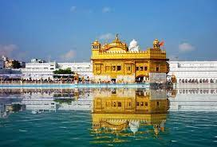
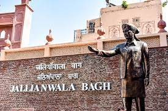
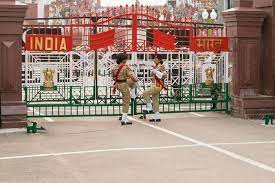
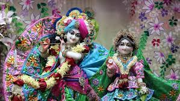
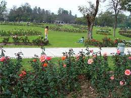
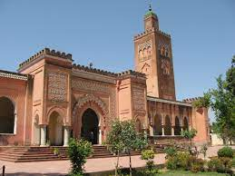
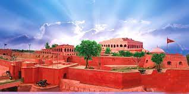

Sri Harmandir Sahib
The Golden temple is famous for its full golden dome, it is one of the most sacred pilgrim spots for Sikhs. The Mandir is built on a 67-ft square of marble and is a two storied structure. Maharaja Ranjit Singh had the upper half of the building built with approximately 400 kg of gold leaf. The Golden Temple is surrounded by a number of other famous temples like the Durgiana Temple. The fourth Guru of Sikhs, Guru Ram Das, who had initially constructed a pool here, founded Amritsar, which houses the Golden Temple or Harmandir Sahib.It is here that Sage Valmiki wrote the epic, Ramayana. Rama and Sita are believed to have spent their fourteen-year exile in Amritsar, the epicenter of Sikhism. To the south of the temple is a garden, and the tower of Baba Atal.

Jallianwala Bagh
The memorial at this site commemorates the 2000 Indians who were killed or wounded, shot indiscriminately by the British under the command of Gen Michael O”Dyer on April 13, 1919 while participating in a peaceful public meeting. This was one of the major incidents of India’s freedom struggle.The story of this appealing massacre is told in the Martyr’s Gallery at the site. A section of wall with bullet marks still visible is preserved along with the memorial well, in which some people jumped to escape. “The impossible men of India shall rise and liberate their mother land”, declared Mahatma Gandhi, after the Jallian Wala massacre. “This disproportionate severity of punishment inflicted upon the unfortunate people and method of carrying it out is without parallel in the history of civilized govt.” wrote Rabindra Nath Tagore the noble laureate while returning knighthood.

Wagah Border
Wagah Border is the international border separating India and Pakistan. This border is important from the perspective of history and the splendid military ceremony that takes place everyday, which attracts a large number of tourists.Wagah Border is an army outpost lying on the India-Pakistan border.
This Border was used by the migrants to cross the border at the time of independence in 1947.
Wagah Border is located at a distance of 32 kms from Amritsar, Punjab.
This border derives its name from Wagah, a village which is located in the Punjab province of Pakistan.
It lies on the famous Grand Trunk Road connecting the cities of Amritsar (Punjab, India) and Lahore (Pakistan).
This place is famous for the Wagah Border Ceremony, also known as Beating Retreat Border Ceremony

Iskcon Temple
ISKCON Temple in Amritsar is dedicated to Lord Krishna. It was founded by The International Society for Krishna Consciousness (ISKCON). ISKCON was founded by His Divine Grace A.C. Bhakti Vedanta Swami (Shrila Prabhupada) in the West in 1966. ISKCON belongs to Gaudiya Vaishnavism, a devotional tradition based on the teachings of Bhagavad Gita and Srimad-Bhagavatam. The Bhagwad Gita is the principal scripture of The Hare Krishna Movement Organization.
The temple houses the idols of many Hindu gods and goddesses with Sri Krishna and Goddess Radha being the most important. The ISKCON temple is open to all. There are regular prayers conducted here and all the visitors are given Prasad free of cost. One can buy spiritual books, pictures of gods, and other items from the stalls put up in the temple.
The ISKCON Amritsar celebrates the Rath Yatra Maha Mahostav of 'Lord Jagannath' every year in the month of December for 3 days. Large number of devotees and tourists flock to the temple to seek the blessings of Lord Krishna and Goddess Radha during Rath Yatra.
Timings: 4.30 AM - 9 PM

Rose Garden, Bathinda
Bathinda is one of the oldest and largest cities in Punjab. This city of lakes is named after the Kings of Bhatis. Rich with religious and cultural heritage, Bathinda is a popular tourist destination in North India. People from Chandigarh and other nearby cities find Bathinda as a favorite weekend getaway destination. There are many places in Bathinda that are worth paying a visit.The Nightingale Rose Gardens in Bhatinda is a beautiful place to get immersed in the beauty of Mother Nature. It was inaugurated on 6th may 1979 by the then Chief Minister of Punjab S. Prakash Singh Badal. The garden is located near the thermal plant and is open to all from morning to late evening. The entry is absolutely free. If you are put up in any of the hotels near the city center, then the rose garden will be in close proximity. There is ample parking space for all and is easily accessible from all parts of the city.

Moorish Mosque
Situated in Kapurthala of Punjab, Moorish Mosque is ensured by the Archeological Survey of India and is among the best mosques in South East Asia. When you take a first glance at the mosque, you will feel like you have been deported to Marrakech as the pattern is made in similar lines. It was built by Raja Jagjit Singh, the last ruler of Kapurthala, in 1930.
The mosque is not just an institution for worshipping but also an initiative by the king to promote social integration among people. Check out all the details about Moorish Mosque and enjoy a visit with your loved ones.The whole place of the Moorish Mosque in Kapurthala is loaded up with elegant lights with good vibes during the hours of Eid. Eid al-Fitr is a significant Muslim occasion celebrated for one day toward the finish of the Islamic sacred month of Ramadan. As Ramadan depends on the lunar schedule the date of Eid al-Fitr changes every year. People arranging a visit Moorish Mosque should plan it during the time of Ramadan to get inundated in the festivity.

Maharaja Ranjit Singh Fort
The fort remained under the control of the army until 1890 when it was transferred to the civil authorities, who used it as a police training centre. On 6 April 1973 it was renamed as 'Maharaja Ranjit Singh Fort' by the Punjab Government. Since 1981 it has been used as the Maharaja Ranjit Singh Punjab Police Academy.